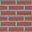
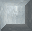
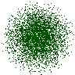

Стандартный укреплённый асфальт для танковых баталий. Через него можно ездить, стрелять, также на нём располагаются стационарные установки. Содержит специальный компонент для сопративления взрывам и снарядам.
|
|  | Противопехотное кирпичное укрепление. Для танка практически не вызывает затруднений его уничтожить. Бронированность составляет 50 hp. В особенности уязвим для Танковой пушки.
|
|  | Сильно бронированное противотанковое укрепление на основе утяжелённого бетона. В такой бетон входят специальные компоненты, препятствующие его разрушению от основных орудий. Лишь мелчайшие снаряды пушки Гаусса на высокой скорости могут проникать сквозь бетон.
|
|  | Наукой необъяснимо, как эти деревья ярко-зелёной окраски могут пробиваться сквозь асфальт. Их высокая способность к регенерации и необыкновенная пластичность стебля могут говорить лишь о неприродном или внеземном происхождении этих растений. Однако танкисты используют это чудо в своих целях:
в лесу удобно прятаться, и любые снаряды пролетают сквозь него без проблем.
|